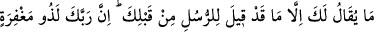
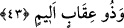

aydınlatır. Sonra Kur’ân ehline memnûn ve hoşnud oldun mu? diye sorulur. O da:
“Evet” der. Bu sefer kirâmen kâtibîn olarak bilinen yazıcı melekler: “Yâ Rabbi! Ehl-i
Kur’ân olan bu kulunun derecesini artır” derler. Allah Teâlâ ise: “Ona kerâmet
elbisesi giydirin” buyurur. O zâta hulle giydirilir. Sonra yine: “Râzı oldun mu?” diye
sorulur. O “Evet” der. Yine melekler: “Yâ Rabbi! Bu kulunun derecesini artır” derler.
Allah Teâlâ da Kur’ân ehline: “Sağ elini aç” buyurur. O da açar. Eli, rıdvan; yani
Allah rızası ile doldurulur. Ona: “Sol elini aç” buyrulur. O da açar. Sol eline huld/
ebedîlik doldurulur.
Sonra ona; “Durumundan memnûn musun denilir?” O da; “Evet” der. Melekler
yine: “Yâ Rabbi! Bu kulunun derecesini artır” derler. Allah Teâlâ: “Bu sefer elbette
ben ona rızâ ve hoşnutluğumu ve ebediyeti verdim” buyurur. Sonra kendisine güneş
gibi bir nur verilir. Yetmiş bin melek eşliğinde cennete doğru yol alır. Allah Teâlâ
şöyle buyurur: “Bu kulumu cennete götürün, Kur’ân’dan her bir harfe bir hasene,
her bir haseneye de bir derece verin” ki iki derece arası yüz senelik mesâfedir.
Bir başka hadîs-i şerîf’te şöyle buyrulur: “Ehl-i Kur’ân olan bu kulun anne ve
babası huzura getirilir. Aynen evlâdlarına yapılan bu güzel muâmele onlara da
yapılır. Bu, Kur’ân ehline olan bir saygı ifâdesidir. Onlar; “Bu da nereden?” derler.
Onlara: “Evlâdınıza Kur’ân öğretmeniz sebebiyle bu iltifat ve ikrâma mazhar
oldunuz” denir.”
İzzet ve şerefi senin adın ve yazdığınla buldum,
Şerefli binlerce can senin adına ve yazdığın kaleme fedâ olsun.
43. (Rasûlüm!) Sana söylenen, senden önceki peygamberlere söylenmiş olandan
başka bir şey değildir. Elbette ki senin Rabbin, hem mağfiret sahibi hem de acı bir
azap sahibidir.
Ey Muhammed kâfirler tarafından “Sana” ve Kur’ân’a “söylenen” sihirbaz, falcı,
deli, masal vs. gibi sözler, “senden önceki peygamberlere” ve onlara indirilen
kitaplara “söylenmiş olandan başka bir şey değildir. Kuşkusuz Rabbin, hem”
peygamberlere ve onlara imân edenlere karşı “bağışlama sâhibi, hem de”
peygamberlere ve onlara indirilen kitaplara inanmayanlara, düşmanlara karşı da “acı
azâb sâhibidir.”
Burada Peygamber (s.a.), kâfirlerden görmüş olduğu eziyet, işkence ve musîbetlere
karşı tesellî edilmekte ve şöyle denmektedir; Eski ümmetler peygamberlere eziyet ve
işkenceyi revâ gördüler. Onlara yardım edildi ve düşmanlardan intikam alındı. Yakında